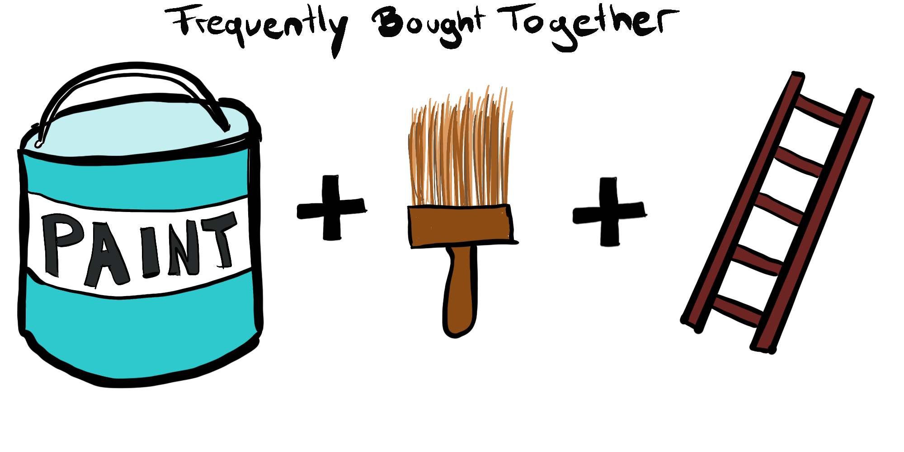

En cours de traduction.
3.1 - Importance de l’Interprétabilité
Si un modèle d’apprentissage automatique fonctionne bien, pourquoi ne pas simplement faire confiance au modèle et ignorer pourquoi il a pris une certaine décision ? “Le problème est qu’une seule métrique, comme la précision de classification, est une description incomplète de la plupart des tâches dans le monde réel.” (Doshi-Velez et Kim 20171)
Plongeons plus profondément dans les raisons pour lesquelles l’interprétabilité est si importante. Lorsqu’il s’agit de modélisation prédictive, vous devez faire un compromis : Voulez-vous simplement savoir ce qui est prédit ? Par exemple, la probabilité qu’un client résilie son contrat ou l’efficacité d’un médicament pour un patient. Ou voulez-vous savoir pourquoi la prédiction a été faite et éventuellement payer pour l’interprétabilité par une baisse de la performance prédictive ? Dans certains cas, vous ne vous souciez pas de savoir pourquoi une décision a été prise, il suffit de savoir que la performance prédictive sur un ensemble de test était bonne. Mais dans d’autres cas, connaître le ‘pourquoi’ peut vous aider à en apprendre davantage sur le problème, les données et la raison pour laquelle un modèle pourrait échouer. Certains modèles peuvent ne pas nécessiter d’explications car ils sont utilisés dans un environnement à faible risque, signifiant qu’une erreur n’aura pas de conséquences graves, (par exemple, un système de recommandation de films) ou la méthode a déjà été largement étudiée et évaluée (par exemple, la reconnaissance optique de caractères). Le besoin d’interprétabilité découle d’une incomplétude dans la formalisation du problème (Doshi-Velez et Kim 2017), ce qui signifie que pour certains problèmes ou tâches, il ne suffit pas d’obtenir la prédiction (le quoi). Le modèle doit également expliquer comment il est arrivé à la prédiction (le pourquoi), car une prédiction correcte ne résout que partiellement votre problème initial. Les raisons suivantes motivent la demande d’interprétabilité et d’explications (Doshi-Velez et Kim 2017 et Miller 20172).
Curiosité humaine et apprentissage : Les humains ont un modèle mental de leur environnement qui est mis à jour lorsqu’un événement inattendu se produit. Cette mise à jour est effectuée en trouvant une explication à l’événement inattendu. Par exemple, un humain se sent inopinément malade et demande : “Pourquoi me sens-je si mal ?”. Il apprend qu’il tombe malade chaque fois qu’il mange ces baies rouges. Il met à jour son modèle mental et décide que les baies sont la cause de la maladie et doivent donc être évitées. Lorsque des modèles d’apprentissage automatique opaques sont utilisés dans la recherche, les découvertes scientifiques restent complètement cachées si le modèle ne fournit que des prédictions sans explications. Pour faciliter l’apprentissage et satisfaire la curiosité quant aux raisons pour lesquelles certaines prédictions ou comportements sont créés par les machines, l’interprétabilité et les explications sont cruciales. Bien sûr, les humains n’ont pas besoin d’explications pour tout ce qui se passe. Pour la plupart des gens, il est acceptable de ne pas comprendre comment fonctionne un ordinateur. Les événements inattendus nous rendent curieux. Par exemple : Pourquoi mon ordinateur s’éteint-il de manière inattendue ?
Étroitement liée à l’apprentissage est le désir humain de trouver un sens dans le monde. Nous voulons harmoniser les contradictions ou les incohérences entre les éléments de nos structures de connaissances. “Pourquoi mon chien m’a-t-il mordu alors qu’il ne l’avait jamais fait auparavant ?” pourrait se demander un humain. Il y a une contradiction entre la connaissance du comportement passé du chien et la nouvelle expérience désagréable de la morsure. L’explication du vétérinaire réconcilie la contradiction du propriétaire du chien : “Le chien était sous stress et a mordu.” Plus une décision de machine affecte la vie d’une personne, plus il est important que la machine explique son comportement. Si un modèle d’apprentissage automatique rejette une demande de prêt, cela peut être complètement inattendu pour les demandeurs. Ils ne peuvent réconcilier cette incohérence entre l’attente et la réalité qu’avec une sorte d’explication. Les explications n’ont pas réellement besoin de tout expliquer, mais devraient aborder une cause principale. Un autre exemple est la recommandation de produits algorithmique. Personnellement, je pense toujours à pourquoi certains produits ou films m’ont été recommandés algorithmiquement. Souvent, c’est assez clair : la publicité me suit sur Internet parce que j’ai récemment acheté une machine à laver, et je sais que dans les prochains jours, je serai suivi par des publicités pour des machines à laver. Oui, il est logique de suggérer des gants si j’ai déjà un bonnet d’hiver dans mon panier. L’algorithme recommande ce film, car les utilisateurs qui ont aimé d’autres films que j’ai appréciés ont également aimé le film recommandé. De plus en plus, les entreprises Internet ajoutent des explications à leurs recommandations. Un bon exemple en sont les recommandations de produits, qui sont basées sur des combinaisons de produits fréquemment achetées :

Dans de nombreuses disciplines scientifiques, on observe un passage de méthodes qualitatives à quantitatives (par exemple en sociologie, psychologie), ainsi qu’une orientation vers l’apprentissage automatique (en biologie, génomique). L’objectif de la science est d’acquérir des connaissances, mais de nombreux problèmes sont résolus avec de grands ensembles de données et des modèles d’apprentissage automatique boîte noire. Le modèle lui-même devient la source de connaissance au lieu des données. L’interprétabilité rend possible l’extraction de ces connaissances supplémentaires capturées par le modèle.
Les modèles d’apprentissage automatique prennent en charge des tâches réelles qui nécessitent des mesures de sécurité et des tests. Imaginez une voiture autonome détectant automatiquement les cyclistes grâce à un système d’apprentissage profond. Vous voulez être sûr à 100% que l’abstraction apprise par le système est exempte d’erreurs, car renverser des cyclistes est assez grave. Une explication pourrait révéler que la caractéristique la plus importante apprise est de reconnaître les deux roues d’un vélo, et cette explication vous aide à réfléchir à des cas limites comme des vélos avec des sacoches latérales qui couvrent partiellement les roues.
Par défaut, les modèles d’apprentissage automatique absorbent les biais des données d’entraînement. Cela peut transformer vos modèles d’apprentissage automatique en racistes qui discriminent contre les groupes sous-représentés. L’interprétabilité est un outil de débogage utile pour détecter les biais dans les modèles d’apprentissage automatique. Il se peut que le modèle d’apprentissage automatique que vous avez entraîné pour l’approbation ou le rejet automatique des demandes de crédit discrimine contre une minorité qui a été historiquement privée de droits. Votre objectif principal est d’accorder des prêts uniquement aux personnes qui les rembourseront finalement. L’incomplétude de la formulation du problème dans ce cas réside dans le fait que vous ne voulez pas seulement minimiser les défauts de paiement, mais êtes également obligé de ne pas discriminer sur la base de certaines démographies. C’est une contrainte supplémentaire qui fait partie de votre formulation de problème (octroi de prêts de manière à faible risque et conforme) qui n’est pas couverte par la fonction de perte pour laquelle le modèle d’apprentissage automatique a été optimisé.
Le processus d’intégration des machines et des algorithmes dans notre vie quotidienne nécessite de l’interprétabilité pour augmenter l’acceptation sociale. Les gens attribuent des croyances, des désirs, des intentions, etc., à des objets. Dans une expérience célèbre, Heider et Simmel (1944)3 ont montré aux participants des vidéos de formes où un cercle ouvrait une “porte” pour entrer dans une “pièce” (qui était simplement un rectangle). Les participants décrivaient les actions des formes comme ils décriraient les actions d’un agent humain, attribuant des intentions et même des émotions et des traits de personnalité aux formes. Les robots sont un bon exemple, comme mon aspirateur, que j’ai nommé “Doge”. Si Doge se coince, je pense : “Doge veut continuer à nettoyer, mais me demande de l’aide car il est coincé.” Plus tard, lorsque Doge termine le nettoyage et cherche la base pour se recharger, je pense : “Doge a le désir de se recharger et a l’intention de trouver la base.” J’attribue aussi des traits de personnalité : “Doge est un peu bête, mais de manière mignonne.” Ce sont mes pensées, surtout lorsque je découvre que Doge a renversé une plante en aspirant consciencieusement la maison. Une machine ou un algorithme qui explique ses prédictions trouvera plus d’acceptation. Voir aussi le chapitre sur les explications, qui soutient que les explications sont un processus social.
Les explications sont utilisées pour gérer les interactions sociales. En créant une signification partagée de quelque chose, l’explicateur influence les actions, les émotions et les croyances du destinataire de l’explication. Pour qu’une machine interagisse avec nous, elle peut avoir besoin de façonner nos émotions et croyances. Les machines doivent nous “persuader” afin qu’elles puissent atteindre leur objectif prévu. Je n’accepterais pas complètement mon aspirateur robot s’il n’expliquait pas son comportement à un certain degré. L’aspirateur crée une signification partagée, par exemple, d’un “accident” (comme se coincer sur le tapis de la salle de bain… encore) en expliquant qu’il s’est coincé au lieu de simplement s’arrêter de fonctionner sans commentaire. Intéressant, il peut y avoir un désalignement entre l’objectif de la machine expliquatrice (créer de la confiance) et l’objectif du destinataire (comprendre la prédiction ou le comportement). Peut-être que l’explication complète de pourquoi Doge s’est coincé pourrait être que la batterie était très faible, que l’une des roues ne fonctionne pas correctement et qu’il y a un bug qui fait que le robot retourne au même endroit encore et encore même s’il y avait un obstacle. Ces raisons (et quelques autres) ont causé le coincement du robot, mais il n’a expliqué que quelque chose bloquait le chemin, et cela suffisait pour que je fasse confiance à son comportement et que je partage la signification de cet accident. D’ailleurs, Doge s’est coincé dans la salle de bain à nouveau. Nous devons enlever les tapis chaque fois avant de laisser Doge aspirer.

Les modèles d’apprentissage automatique ne peuvent être débogués et audités que lorsqu’ils peuvent être interprétés. Même dans des environnements à faible risque, tels que les recommandations de films, la capacité à interpréter est précieuse tant dans la phase de recherche et développement qu’après le déploiement. Plus tard, lorsqu’un modèle est utilisé dans un produit, des problèmes peuvent survenir. Une interprétation d’une prédiction erronée aide à comprendre la cause de l’erreur. Elle fournit une direction sur comment réparer le système. Considérez l’exemple d’un classificateur husky contre loup qui classe mal certains huskies comme loups. En utilisant des méthodes d’apprentissage automatique interprétables, vous trouveriez que la mauvaise classification était due à la neige sur l’image. Le classificateur a appris à utiliser la neige comme caractéristique pour classifier les images comme “loup”, ce qui pourrait avoir du sens en termes de séparation des loups des huskies dans l’ensemble de données d’entraînement, mais pas dans une utilisation réelle.
Si vous pouvez garantir que le modèle d’apprentissage automatique peut expliquer ses décisions, vous pouvez également vérifier plus facilement les caractéristiques suivantes (Doshi-Velez et Kim 2017) :
- Équité : Assurer que les prédictions sont impartiales et ne discriminent pas implicitement ou explicitement contre les groupes sous-représentés. Un modèle interprétable peut vous dire pourquoi il a décidé qu’une certaine personne ne devrait pas obtenir un prêt, et il devient plus facile pour un humain de juger si la décision est basée sur un biais démographique appris (par exemple, racial).
- Confidentialité : Assurer que les informations sensibles dans les données sont protégées.
- Fiabilité ou Robustesse : Assurer que de petits changements dans l’entrée ne conduisent pas à de grands changements dans la prédiction.
- Causalité : Vérifier que seules les relations causales sont prises en compte.
- Confiance : Il est plus facile pour les humains de faire confiance à un système qui explique ses décisions par rapport à une boîte noire.
Quand nous n’avons pas besoin d’interprétabilité.
Les scénarios suivants illustrent quand nous n’avons pas besoin ou même ne voulons pas d’interprétabilité des modèles d’apprentissage automatique.
L’interprétabilité n’est pas nécessaire si le modèle n’a pas d’impact significatif. Imaginez quelqu’un nommé Mike travaillant sur un projet d’apprentissage automatique pour prédire où ses amis iront pour leurs prochaines vacances en se basant sur des données Facebook. Mike aime juste surprendre ses amis avec des suppositions éclairées sur leur destination de vacances. Il n’y a pas de vrai problème si le modèle se trompe (au pire juste un peu embarrassant pour Mike), ni s’il ne peut pas expliquer la sortie de son modèle. Il est parfaitement acceptable de ne pas avoir d’interprétabilité dans ce cas. La situation changerait si Mike commençait à construire une entreprise autour de ces prédictions de destinations de vacances. Si le modèle est erroné, l’entreprise pourrait perdre de l’argent, ou le modèle pourrait fonctionner moins bien pour certaines personnes à cause d’un biais racial appris. Dès que le modèle a un impact significatif, qu’il soit financier ou social, l’interprétabilité devient pertinente.
L’interprétabilité n’est pas nécessaire lorsque le problème est bien étudié. Certaines applications ont été suffisamment bien étudiées de sorte qu’il y a assez d’expérience pratique avec le modèle et les problèmes liés au modèle ont été résolus au fil du temps. Un bon exemple est un modèle d’apprentissage automatique pour la reconnaissance optique de caractères qui traite des images d’enveloppes et extrait les adresses. Il y a des années d’expérience avec ces systèmes et il est clair qu’ils fonctionnent. De plus, nous ne sommes pas vraiment intéressés par l’acquisition de connaissances supplémentaires sur la tâche en question.
L’interprétabilité pourrait permettre à des personnes ou à des programmes de manipuler le système. Les problèmes avec les utilisateurs qui trompent un système résultent d’un décalage entre les objectifs du créateur et de l’utilisateur d’un modèle. Le scoring de crédit est un tel système parce que les banques veulent s’assurer que les prêts ne sont accordés qu’aux demandeurs susceptibles de les rembourser, et les demandeurs visent à obtenir le prêt même si la banque ne souhaite pas leur accorder. Ce décalage entre les objectifs introduit des incitations pour les demandeurs à manipuler le système pour augmenter leurs chances d’obtenir un prêt. Si un demandeur sait que le fait d’avoir plus de deux cartes de crédit affecte négativement son score, il rend simplement sa troisième carte de crédit pour améliorer son score, et organise une nouvelle carte après l’approbation du prêt. Bien que son score se soit amélioré, la probabilité réelle de rembourser le prêt est restée inchangée. Le système ne peut être manipulé que si les entrées sont des substituts d’une caractéristique causale, mais ne causent pas réellement le résultat. Dans la mesure du possible, les caractéristiques substituts devraient être évitées car elles rendent les modèles manipulables. Par exemple, Google a développé un système appelé Google Flu Trends pour prédire les épidémies de grippe. Le système corrélait les recherches Google avec les épidémies de grippe - et il a mal performé. La distribution des requêtes de recherche a changé et Google Flu Trends a manqué de nombreuses épidémies de grippe. Les recherches Google ne causent pas la grippe. Lorsque les gens recherchent des symptômes comme “fièvre”, c’est simplement une corrélation avec les épidémies de grippe réelles. Idéalement, les modèles n’utiliseraient que des caractéristiques causales car elles ne seraient pas manipulables.
Notes de bas de page
Doshi-Velez, Finale, and Been Kim. “Towards a rigorous science of interpretable machine learning,” no. Ml: 1–13. https://arxiv.org/abs/1702.08608 (2017).↩︎
Miller, Tim. “Explanation in artificial intelligence: Insights from the social sciences.” arXiv Preprint arXiv:1706.07269. (2017).↩︎
Heider, Fritz, and Marianne Simmel. “An experimental study of apparent behavior.” The American Journal of Psychology 57 (2). JSTOR: 243–59. (1944).↩︎